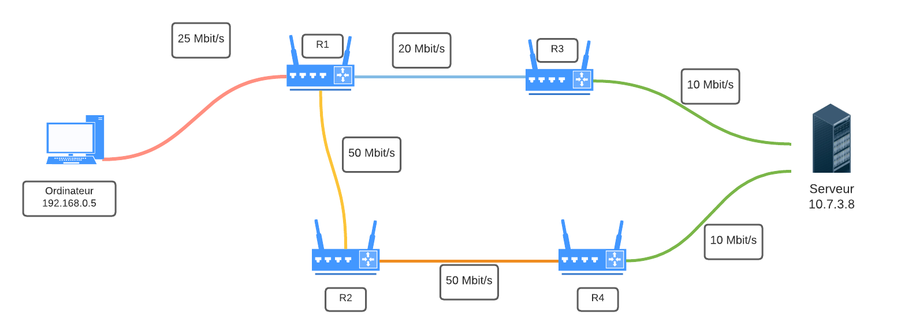

TD n°19 : Protocoles de routage⚓︎
Programme officiel⚓︎

I. Résumé des épisodes précédents⚓︎
⏩ Notion d'adressage⚓︎
Deux types d'adresses existent :
Adresse MAC Une adresse matérielle, ou adresse MAC, parfois nommée adresse physique, est un identifiant physique stocké dans une carte réseau ou une interface réseau similaire (Wifi par exemple). À moins qu’elle n’ait été modifiée par l’utilisateur, elle est unique au monde.
Elle constitue la couche inférieure de la couche de liaison, c'est-à-dire la couche deux du modèle OSI. Elle est constituée de six octets, il existe donc potentiellement \(2^{48}\) (environ 281 000 milliards) d'adresses MAC possibles.
Adresse IP Une adresse IP (Internet Protocol) est un numéro d'identification qui est attribué de façon permanente ou provisoire à chaque périphérique relié à un réseau informatique qui utilise l'Internet Protocol. L'adresse IP est à la base du système d'acheminement (le routage) des paquets de données sur Internet.
Notions essentielles : Lorsqu'une machine A, d'adresse IP_A veut discuter avec une machine B, d'adresse IP_B :
- La machine A calcule (grâce au masque de sous-réseau) si B est dans le même sous-réseau qu'elle, ou pas.
- Si oui, elle peut donc connaître l'adresse MAC de la carte réseau de la machine B (soit elle la possède déjà dans sa table ARP, soit elle la demande en envoyant un message de broadcast à tout le sous-réseau : «qui possède cette adresse IP_B ?»).
Elle envoie donc dans le sous-réseau une trame ayant pour entête l'adresse MAC de B : le switch lit cette trame, sait sur quel port est branché la machine B et lui envoie spécifiquement donc le message.
-
Si B n'est pas dans le même sous-réseau que A, A mettra en entête de sa trame l'adresse MAC de la carte réseau du routeur, qui joue le rôle de passerelle. Le routeur va ouvrir la trame et va observer l'IP_B, à qui il doit remettre ce message. C'est maintenant que vont intervenir les protocoles de routage :
- est-ce que B est dans le même sous-réseau que le routeur ?
- est-ce que B est dans un autre sous-réseau connu du routeur ?
- est-ce que B est totalement inconnu du routeur ?
Ces questions trouveront des réponses grâce à table de routage du routeur.
II. Tables de routage⚓︎

Les tables de routage sont des informations stockées dans le routeur permettant d'aiguiller intelligemment les données qui lui sont transmises.
Dans le réseau ci-dessus, si l'ordinateur d'adresse 192.168.0.5 veut interroger le serveur 10.7.3.8 :
- l'adresse
10.7.3.8n'étant pas dans le sous-réseau F (d'adresse192.168.0.0 / 24), la requête est confiée au routeur via son adresse passerelle dans le réseau F (ici192.168.0.254). - le routeur observe si l'IP recherchée appartient à un autre des sous-réseaux auquel il est connecté. Ici, l'IP recherchée
10.7.3.8n'appartient ni au sous-réseau A ou E. - le routeur va donc regarder dans sa table de routage l'adresse passerelle d'un autre routeur vers qui elle doit rediriger les données. Si le sous-réseau C fait partie de sa table de routage, le routeur R1 saura alors que le meilleur chemin est (par exemple) de confier les données au routeur R3.
- si le sous-réseau C ne fait pas partie de la table de routage, le routeur R1 va alors le rediriger vers une route «par défaut» (que l'on peut assimiler au panneau «toutes directions» sur les panneaux de signalisation).
Par exemple, la table de routage du routeur R1 pourrait être :
| Destination | Passerelle |
|---|---|
| 192.168.0.0 /24 | 192.168.0.254 |
| 172.17.1.0 /24 | 172.17.1.254 |
| 10.0.5.0 /24 | 10.0.5.152 |
| 10.5.2.0 /24 | 172.17.1.254 |
| 10.7.3.0 /24 | 10.0.5.135 |
⏩ Comment sont construites les tables de routage ?⚓︎
- Soit à la main par l'administrateur réseau, quand le réseau est petit : on parle alors de table statique.
- Soit de manière dynamique : les réseaux s'envoient eux-mêmes des informations permettant de mettre à jour leurs tables de routages respectives. Des algorithmes de détermination de meilleur chemin sont alors utilisés : nous allons en découvrir deux, le protocole RIP et le protocole OSPF.
III. Le protocole RIP⚓︎
A connaitre RIP Le Routing Information Protocol est basé sur l'échange (toutes les 30 secondes) des tables de routage de chaque routeur.
Au début, chaque routeur ne connaît que les réseaux auquel il est directement connecté, associé à la distance 1.
Ensuite, chaque routeur reçoit périodiquement la table des réseaux auquel il est connecté :
- s'il découvre une route vers un nouveau réseau inconnu, il l'ajoute à sa table en augmentant de 1 la distance annoncée par le routeur qui lui a transmis sa table.
- s'il découvre une route vers un réseau connu mais plus courte (en rajoutant 1) que celle qu'il possède dans sa table, il actualise sa table.
- s'il découvre une route vers un réseau connu mais plus longue que celle qu'il possède dans sa table, il ignore cette route.
-
s'il reçoit une route vers un réseau connu en provenance d'un routeur déjà existant dans sa table, s'il met à jour sa table car la topologie du réseau a été modifiée.
-
si le réseau n'évolue pas (panne ou ajout de nouveau matériel), les tables de routage convergent vers une valeur stable. Elles n'évoluent plus.
- si un routeur ne reçoit pas pendant 3 minutes d'information de la part d'un routeur qui lui avait auparavant communiqué sa table de routage, ce routeur est considéré comme en panne, et toutes les routes passant par lui sont affectées de la distance infinie : 16.
Remarques et incovénients:
-
Le protocole RIP n'admet qu'une distance maximale égale à 15 (ceci explique que 16 soit considéré comme la distance infinie), ce qui le limite aux réseaux de petite taille.
-
Chaque routeur n'a jamais connaissance de la topologie du réseau tout entier : il ne le connaît que par ce que les autres routeurs lui ont raconté. On dit que ce protocole de routage est du routing by rumor.
-
La métrique utilisée (le nombre de sauts) ne tient pas compte de la qualité de la liaison, contrairement au protocole OSPF.
IV. Le protocole OSPF⚓︎
OSPF OSPF : Open Shortest Path First
Un inconvénient majeur du protocole RIP précédent est la non-prise en compte de la bande passante reliant les routeurs.
En voiture, le chemin le plus rapide n'est pas forcément le plus court.
 {
{
En gris, le chemin RIP. En bleu, l'OSPF.
Dans le protocole OSPF, les tables de routage vont prendre en considération la vitesse de communication entre les routeurs.
Dans une première phase d'initialisation, chaque routeur va acquérir (par succession de messages envoyés et reçus) la connaissance totale du réseau (différence fondamentale avec RIP) et de la qualité technique de la liaison entre chaque routeur.
⏩ Les différents types de liaison et leur coût⚓︎
On peut, approximativement, classer les types de liaison suivant ce tableau de débits théoriques :
| Technologie | BP descendante | BP montante |
|---|---|---|
| Modem | 56 kbit/s | 48 kbit/s |
| Bluetooth | 3 Mbit/s | 3 Mbit/s |
| Ethernet | 10 Mbit/s | 10 Mbit/s |
| Wi-Fi | 10 Mbit/s ~ 10 Gbits/s | 10 Mbit/s ~ 10 Gbits/s |
| ADSL | 13 Mbit/s | 1 Mbit/s |
| 4G | 100 Mbit/s | 50 Mbit/s |
| Satellite | 50 Mbit/s | 1 Mbit/s |
| Fast Ethernet | 100 Mbit/s | 100 Mbit/s |
| FFTH (fibre) | 10 Gbit/s | 10 Gbit/s |
| 5G | 20 Gbit/s | 10 Gbit/s |
L'idée du protocole OSPF est de pondérer chaque trajet entre routeurs (comptant simplement pour «1» dans le protocole RIP) par une valeur de coût inversement proportionnelle au débit de transfert.
Par exemple, si le débit d est exprimé en bits/s, on peut calculer le coût de chaque liaison par la formule :
A connaitre
\(\text{coût} = \dfrac{10^8}{d}\)
Cette formule de calcul peut être différente suivant les exercices, et sera normalement redonnée. Néanmoins la valeur d sera toujours au dénominateur, pour assurer la proportionnalité inverse du débit.
Avec cette convention, un route entre deux routeurs reliés en Fast Ethernet (100 Mbits/s) aura a un poids de 1, une liaison satellite de 20 Mbits/s aura un poids de 5, etc.
⏩ Exemple⚓︎
Reprenons le réseau suivant :

et simplifions-le en ne gardant que les liens entre routeurs, en indiquant leur débit :

Notre réseau est devenu un graphe. Nous allons pondérer ses arêtes avec la fonction coût introduite précédemment. L'unité étant le Mbit/s, l'arête entre R1 et R3 aura un poids de 100/20=5.
Le graphe pondéré est donc :

Le chemin le plus rapide pour aller de l'ordinateur au serveur est donc R1-R2-R4, et non plus R1-R3 comme l'aurait indiqué le protocole RIP.
⏩ Trouver le plus court chemin dans un graphe pondéré⚓︎
L'exemple précédent était très simple et de solution intuitive. Dans le cas d'un graphe pondéré complexe, existe-t-il un algorithme de détermination du plus court chemin d'un point à un autre ?
La réponse est oui, depuis la découverte en 1959 par Edsger Dijkstra de l'algorithme qui porte son nom, l'algorithme de Dijkstra.
Pour le comprendre, vous pouvez regarder la vidéo d'un célèbre YouTuber :
Cet algorithme, ici exécuté de manière manuelle, est bien sûr programmable. Et c'est donc grâce à lui que chaque routeur calcule la route la plus rapide pour acheminer les données qu'il reçoit.
Exemple d'application de l'algorithme de Dijkstra :

Donner le plus court chemin pour aller de A à H.